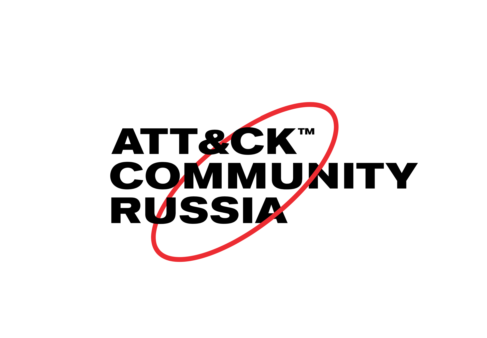

Сообщество специалистов различных специализаций и отраслей Информационной Безопасности, включая независимых экспертов, производителей систем безопасности, разработчиков проектов с открытым исходным кодом, поставщиков сервисов обеспечения защищенности, CSIRT/CERT и иных организаций, цель которых — распространение знаний для совершенствования компьютерной безопасности с использованием фреймворка MITRE ATT&CK.Встречи
Ближайшая встреча сообщества пройдет 14 Мая на конференции Positive Hack Days 2020 в Москве. Формат — короткие (15-20 минут) доклады об использовании фреймворка на практике по направлениям Предотвращения, Эмуляции, Реагирования и Обнаружения угроз Информационной Безопасности.Для участников конференции Positive Hack Days 2020 вход свободный.
Вы можете подать заявку на участие в качестве докладчика связавшись с координатором.
Благодарности
- Организаторам Positive Hack Days 2020 за место на конференции и информационную поддержкуКонтакты
Вы можете связаться с нами по электронной почте, либо вступив в чат сообщества в telegram.Организаторы
Русскоязычное сообщество ATT&CK было создано при согласии корпорации MITRE, но не находится под ее непосредственным или косвенным управлением. Детальная информация о MITRE ATT&CK™ может быть найдена на официальном веб-сайте.Данное сообщество не аффилировано ни с одной из организаций-участниц или с какими-либо иными коммерческими организациями. При этом, участникам не запрещено указывать организацию в которой они на данный момент работают.